名柯漫画中涉及了大量的神话故事，比如金苹果、人鱼、八岐大蛇等。本帖从日本神话的角度结合名柯剧情来分析乌丸家族和黑羽家族本为同源，实为手足。
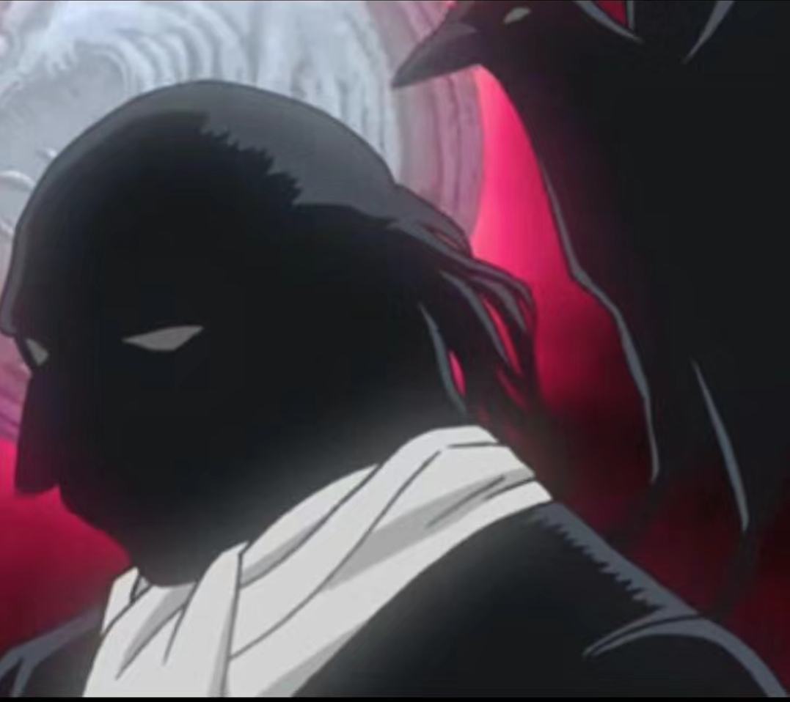
日本神话中的金乌，书面形象最早见于《和汉三才图会·天部卷》，一般被视为天照大神的使者和【太阳】的象征。乌鸦这个元素代表的正是乌丸莲耶。
月亮星星与太阳的秘密中，阿笠博士伯父的宅邸和黄昏别馆十分相似，同样有着时钟，扑克牌，西洋棋的元素。他的伯父说的50年内要保持别墅的原貌，50年这个数字，这和乌丸消失于半世纪前又很相似，不难猜到青山借此案隐喻乌丸莲耶，这再一次印证了青山喜欢将大主线的情节藏于之前的小主线中。
经过上述分析可以得出结论：【黑色太阳】＝乌丸莲耶。
月亮星星与太阳这篇漫画标题正是【黑色的太阳】。
月亮星星与太阳的秘密中，阿笠博士伯父的宅邸和黄昏别馆十分相似，同样有着时钟，扑克牌，西洋棋的元素。他的伯父说的50年内要保持别墅的原貌，50年这个数字，这和乌丸消失于半世纪前又很相似，不难猜到青山借此案隐喻乌丸莲耶，这再一次印证了青山喜欢将大主线的情节藏于之前的小主线中。
经过上述分析可以得出结论：【黑色太阳】＝乌丸莲耶。
月亮星星与太阳这篇漫画标题正是【黑色的太阳】。
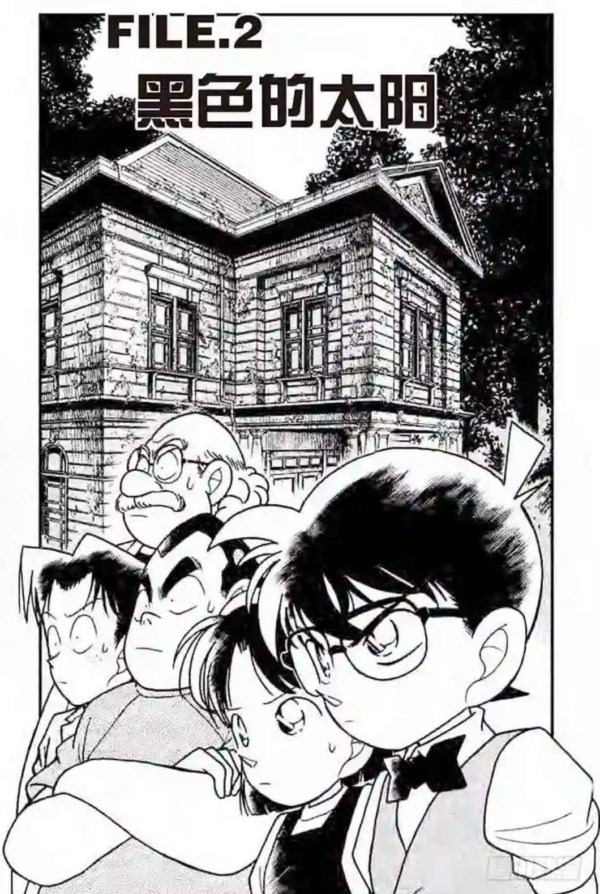
在月亮星星与太阳的秘密中，暗号中的图案对应着日文中的平假名。工藤的平假名くどう按密码表转换后正是月亮。
飞天密室案是新一第一次破案，飞机上面的图案正是【黑色月亮】。
结合这两个篇章，可以得出结论，【黑色月亮】＝工藤。
飞天密室案是新一第一次破案，飞机上面的图案正是【黑色月亮】。
结合这两个篇章，可以得出结论，【黑色月亮】＝工藤。
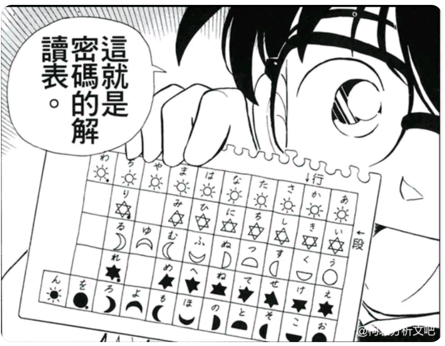
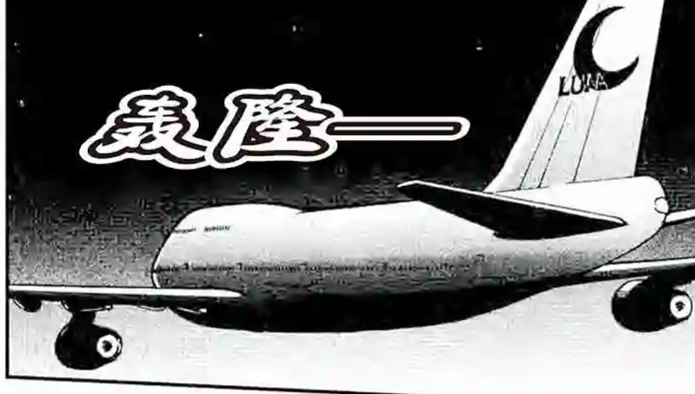
2024-06-01 05:55 | 谁比我娇羞:楼主楼主，不会日语，这个密码表转换是怎么得出工藤=月亮的啊2024-06-01 06:02 | EdwardClow:くどう就是密码表上的月亮图案啊。你自己找一下这三个平假名对应的图案2024-06-01 22:34 | 谁比我娇羞:回复 EdwardClow :看了半天，く=白色半圆，ど=黑色半圆，う=白色整圆，所以怎么来的工藤=黑色月亮结论？2024-06-01 22:35 | EdwardClow:回复 谁比我娇羞 :打错了，不是黑色月亮，只是【月亮】2024-06-01 22:40 | EdwardClow:回复 谁比我娇羞 :整圆是满月2024-06-01 22:42 | EdwardClow:回复 谁比我娇羞 :第三行和第五行是月亮，第一行是太阳，第二行和第四行是星星2024-06-01 22:43 | 谁比我娇羞:回复 EdwardClow :好的
日本神话中，太阳神（天照大神）和月亮神（月读）是亲姐弟，而两人后来也是发生了矛盾，不再见面，这点与乌丸工藤现在是对立的立场不谋而合。
2024-06-01 02:38 | 世界上没有真理:等下！我看過一個名柯週邊圖，哀是天照大神的裝扮，這是不是在暗示什麼？！2024-06-01 02:44 | EdwardClow:回复 世界上没有真理 :①哀是乌丸的手下，穿着天照大神的衣服也正常②哀年龄比柯南大，是柯南的姐姐，对应神话中的天照是月读的姐姐，但这个是将神话元素拆分，强调柯哀的年龄问题，并不是说柯哀是亲姐弟，只是年龄上的姐弟恋。2024-06-01 02:44 | EdwardClow:回复 世界上没有真理 :或许可以找一下那张周边图，看看其他角色对应的神话人物是谁2024-06-01 03:17 | 世界上没有真理:博士也是太陽符號，哀是博士親女兒般的存在，感覺符號也很多2024-06-01 06:11 | EdwardClow:回复 世界上没有真理 :名柯中的符号太多了，数不胜数2024-06-01 09:23 | EdwardClow:回复 世界上没有真理 :最近又发现一个神话符号，终于明白为什么Rum要来当厨师了2024-06-01 11:58 | 世界上没有真理:因为他对应的人物是惠比寿，也就是日本灶神，即厨师之神
回复 EdwardClow :為何對應惠比壽？2024-06-01 16:12 | EdwardClow:回复 世界上没有真理 :惠比寿是渔业神，形象是拿着鲷鱼，对应了厨师做寿司。

cy
漫画封面上的新一与月亮，这暗示已经十分明显了，月亮这个意象代表的正是【工藤】。
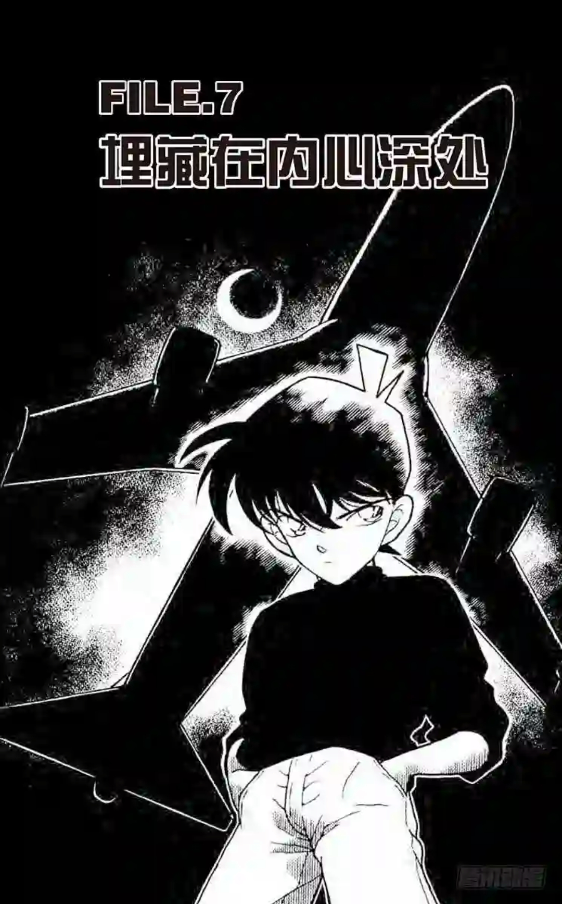
1996年青山更新月亮星星太阳的秘密，用【黑色太阳】为之后登场的黑衣组织boss做铺垫。1998年青山画出飞天密室案，用【月亮】这个意象来指代工藤。
也就是说，上个世纪青山就考虑好了乌丸和新一本就是亲戚关系，A药的基因序列里有乌丸的生物信息，乌丸妄想时光倒流，所以新一吃下A药才不会死，而是变小。
也就是说，上个世纪青山就考虑好了乌丸和新一本就是亲戚关系，A药的基因序列里有乌丸的生物信息，乌丸妄想时光倒流，所以新一吃下A药才不会死，而是变小。
2024-07-02 10:10 | 陶乐西😁:其实这么看的话太阳月亮也可对应盗一优作兄弟，黑羽是哥哥是乌鸦，弟弟是工藤又是月亮的意思。而且日本神话里月读又是夜国的王优作又称自己暗夜男爵。同样他们爸爸姓黑羽，妈妈姓工藤也代表了日月不见面俩人也确实分开了2024-07-26 09:03 | Aslaºº:这样的话解释志保变小是不是就类比为含有艾莲娜的基因，因此a药会杀死不是（坠）天使和天使子嗣的人，也就称为银色子弹2024-07-26 09:38 | EdwardClow:回复 Aslaºº :40楼是我的最新想法
直播
1997年青山画了漆黑之星篇，首次将怪盗基德这个角色引进了名柯里，基德是“月光下的魔术师”，所以【月亮】这个意象同样指向了黑羽快斗。
【月亮】同时指代新一和快斗，青山的意图不言而喻，黑羽和工藤早在上个世纪便紧紧联系在了一起！
M27终于将快斗是新一的堂弟这个事实画了出来，然而却引来某些云读者的冷嘲热讽，说青山为了流量和票房开始瞎画了，对于这些云读者，我想说的是你们真的仔细看过漫画吗？
明明上个世纪青山就有了二人是亲戚的想法，只不过他喜欢拖剧情才在2024年回收伏笔，这怎么能说青山是在瞎画呢？
那些没有理解漫画伏笔的读者，在多年之后青山回收伏笔之际应该惊叹，而不应该冷嘲热讽。
【月亮】同时指代新一和快斗，青山的意图不言而喻，黑羽和工藤早在上个世纪便紧紧联系在了一起！
M27终于将快斗是新一的堂弟这个事实画了出来，然而却引来某些云读者的冷嘲热讽，说青山为了流量和票房开始瞎画了，对于这些云读者，我想说的是你们真的仔细看过漫画吗？
明明上个世纪青山就有了二人是亲戚的想法，只不过他喜欢拖剧情才在2024年回收伏笔，这怎么能说青山是在瞎画呢？
那些没有理解漫画伏笔的读者，在多年之后青山回收伏笔之际应该惊叹，而不应该冷嘲热讽。
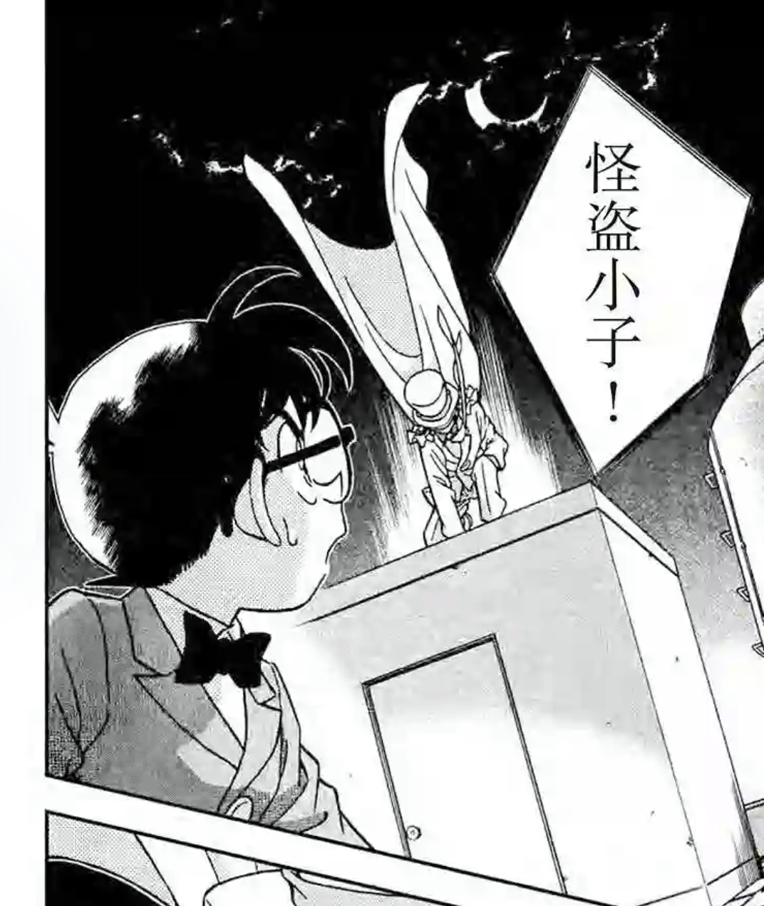
2024-06-20 23:57 | Asura兔子:和上面新一的那个月亮一模一样2024-06-21 00:01 | EdwardClow:回复 Asura兔子 :对，都是眉月2024-06-24 04:53 | 天无二日朴卡卡:回复 EdwardClow :天哪楼主，我浅浅一翻，漆黑之星起码出现了六个眉月，都在柯南头上2024-06-24 05:33 | EdwardClow:回复 天无二日朴卡卡 :青山的伏笔实在深2024-06-25 06:00 | 久作天地客:回复 天无二日朴卡卡 :6哇，我要回去重看这一篇

cy.
好家伙
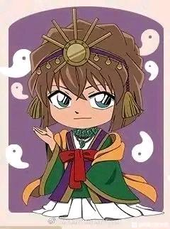
cy
【月读】的意思是读取月相，月相反映着时间的流逝，名柯从新一吃A药变小到现在，时间线只过了大半年便有了合理的解释，因为在名柯的世界里，新一掌握着日程安排。
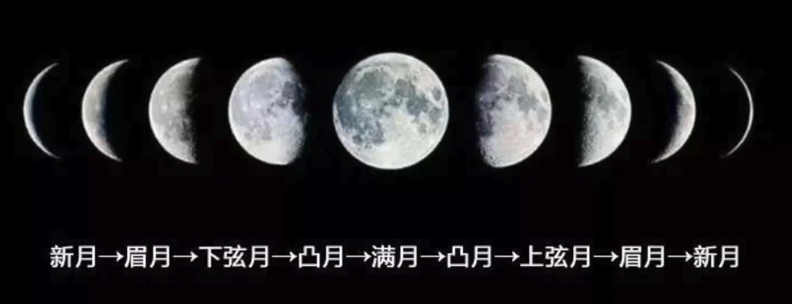
那这么说，柯南和灰原也有血缘关系了。哦对，有一说是哀妈研究时加入了自家基因。但如果这一说成立，贝姐的行为好像合理了些，伦敦篇前一点给姨妈下药，此时贝姐已知A药的效果，放走跳水姨妈在她计划之内，为了增强红方实力。
2024-06-01 03:59 | EdwardClow:柯哀没血缘关系，贝姐不知道宫野夫妇对A药做了手脚，在MI6的门口她还不敢大张旗鼓，只能给领妹喂A药2024-06-01 04:05 | 其它各种:回复 EdwardClow :如果贝姐知道只有乌丸有血缘关系的人才能变小的话，她看到灰原变小的样子，就应该能明白是怎么回事。 如果贝姐不知道只有特殊血缘变小，只知道A药是变小，那更是故意放走姨妈了。2024-06-01 04:07 | EdwardClow:回复 其它各种 :或许贝姐至今都没想明白为啥灰原会变小…她对于A药的理解还是冻龄2024-06-01 04:13 | 其它各种:回复 EdwardClow :也对，贝姐行为本来就挺迷的，分析的起点偏差一些，可能会推出完全不一样的结论。
太陽月亮星星，所以星星是指志保，月亮是新一，太陽是烏丸？
2024-06-01 04:37 | EdwardClow:对啊，我在【黄昏之馆案对大结局的暗示】那个帖子里就说过
登场角色名牌上的年龄没有参考价值。冲矢昴名牌27岁，但秀一真实年龄是32岁。
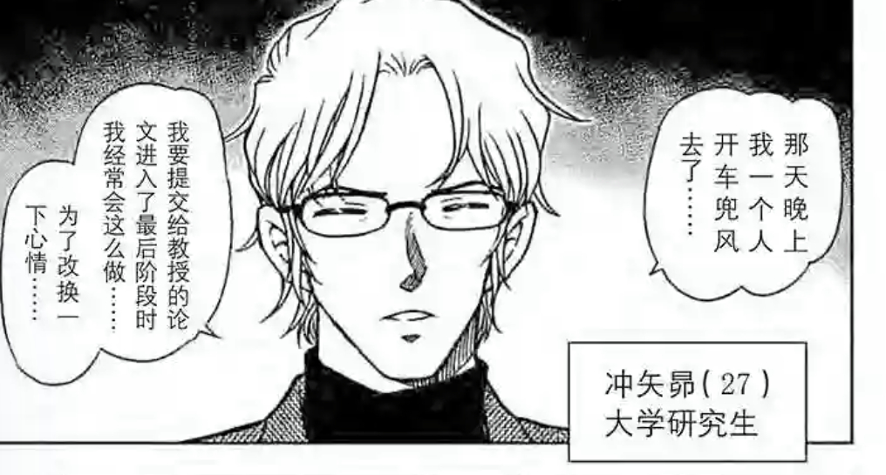
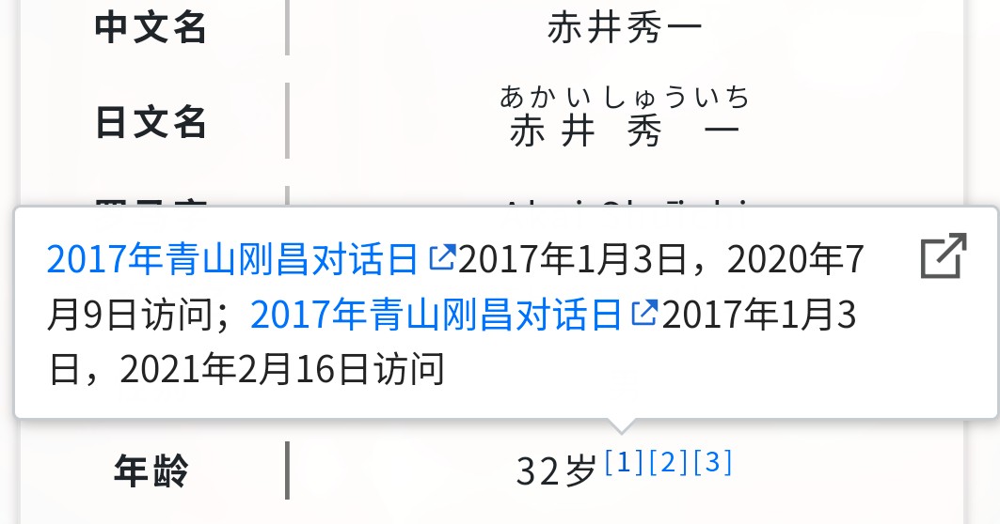
2024-06-01 05:11 | 猫头鹰x侦探:但是名牌上的是目前这个人在社会上的信息。 秀一要扮演的是一个27岁的大学研究生，是经过有希子帮助伪装的脸。 朗姆扮演成寿司师傅，变装是很简单的。2024-06-01 05:12 | EdwardClow:回复 猫头鹰x侦探 :Rum扮演的是厨师，也可以谎报年龄2024-06-01 05:15 | 猫头鹰x侦探:回复 EdwardClow :我的观点参考21楼，朗姆真实年龄是(67+x)岁。朗姆很有可能已经七十几岁，甚至八十几岁了。这也是朗姆现在和其他组织的人下达命令要通过邮件或者变声器。为了隐瞒自己也冻龄永生了。 朗姆便装成寿司厨师的便装很简单，50+与70+、80+年龄的区别还是有些大的。2024-06-01 05:15 | EdwardClow:回复 猫头鹰x侦探 :谎报年龄和是否易容无关。2024-06-01 05:17 | EdwardClow:回复 猫头鹰x侦探 :我不理解你为什么一直在说变装的问题？另外Rum要隐瞒的是身份，如果他不用变声器，其他组织成员可以通过声纹识别揪出他的真实身份。
厨师名牌上的56岁是谎报年龄，因为32岁的秀一变为冲矢昴的时候名牌上写的是27岁，这也是谎报年龄。
Rum现在的真实年龄就是70多岁，他并没有冻龄，并没有吃过A药，目前A药的秘密只有Boss和贝姐知道，组织里也只有他们两个服用了A药。
Rum现在的真实年龄就是70多岁，他并没有冻龄，并没有吃过A药，目前A药的秘密只有Boss和贝姐知道，组织里也只有他们两个服用了A药。
2024-06-01 05:16 | 猫头鹰x侦探:我们的大致分歧就是在这一点上。2024-06-02 21:37 | shine铅华散尽:但是羽案不是朗姆对阿曼达回忆贝姐的变声吗？而且贝姐这些年一直是容貌不变的啊，属于活招牌了吧，朗姆不可能不知道有药可以冻龄的吧？2024-06-02 22:11 | EdwardClow:回复 shine铅华散尽 :Rum知道二代A药能冻龄但没吃，不知道灰原的三代A药能变小
青山刻画人物老态的方式是眼角的皱纹，17年后Rum眼角的皱纹清晰可见，可以得出结论Rum是真的在衰老，而不是冻龄。
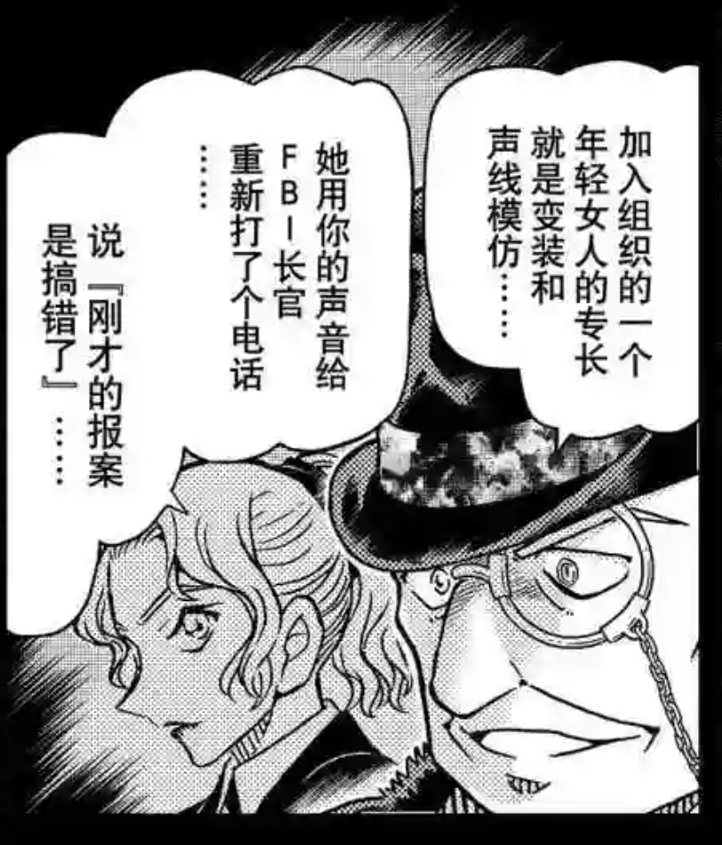
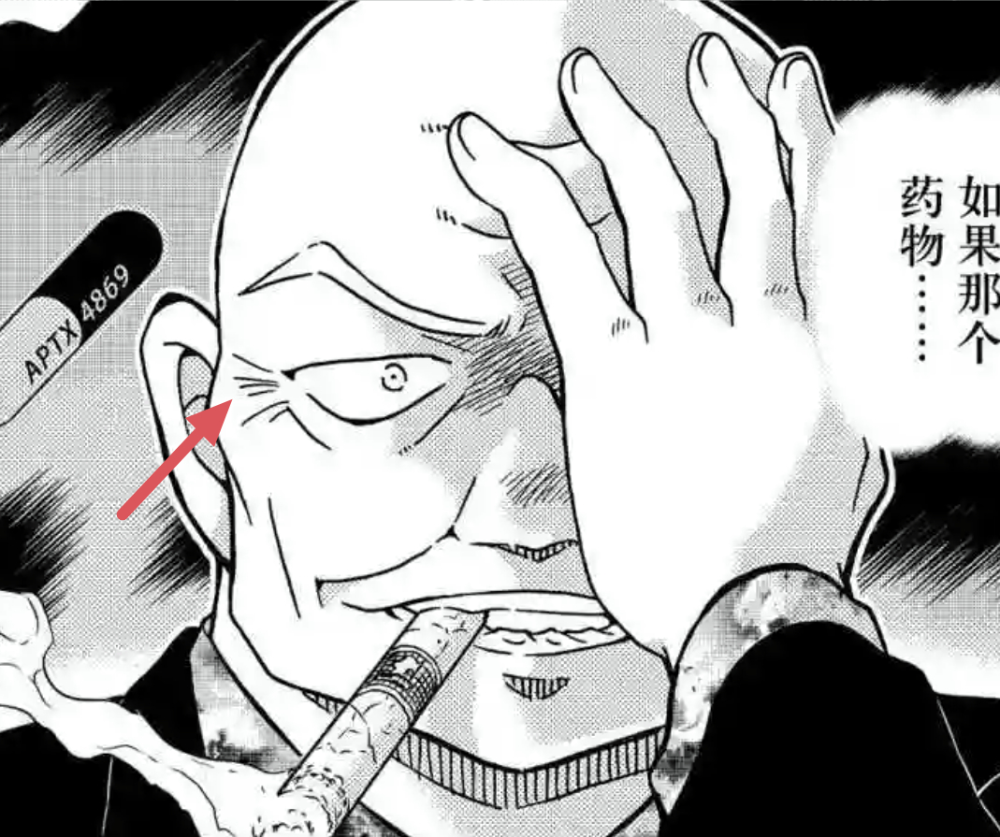
2024-06-01 05:30 | 猫头鹰x侦探:其实我发现已经歪楼了。我一开始和你争论的是，A药到底是不是针对BOSS的基因起效果，后面就歪到朗姆有没有吃过A药了。
感觉这类假说现在提还是太早了。
主要是缺乏相应证据或暗示，现有的一些暗示更像是捕风捉影，严谨性不足，出现频率也不够高。
另外，如果从名柯主旨上讲，让黑羽乌丸同源并没有什么好处，这毕竟是一个正义战胜邪恶的故事，所谓同源只是徒增争议而已。
我是认为不应该把所谓“魔快并入柯南”看得太重，这最多只能算快斗在柯南这边获得了常驻广告位，不会对主线有什么影响的。
主要是缺乏相应证据或暗示，现有的一些暗示更像是捕风捉影，严谨性不足，出现频率也不够高。
另外，如果从名柯主旨上讲，让黑羽乌丸同源并没有什么好处，这毕竟是一个正义战胜邪恶的故事，所谓同源只是徒增争议而已。
我是认为不应该把所谓“魔快并入柯南”看得太重，这最多只能算快斗在柯南这边获得了常驻广告位，不会对主线有什么影响的。
2024-06-01 06:05 | EdwardClow:月亮星星与太阳的秘密在名柯中多次出现，频率够高的了2024-06-01 07:29 | 🌐之徙:回复 EdwardClow :那个我更多觉得是青山对自己设计的暗号比较满意，一直在显摆

对于捕风捉影这句话，我只能说仁者见仁智者见智。
有大神在羽田秀吉登场后便猜测他和名单上的羽田浩司有关系，十多年前这是多么滑稽的言论，吧友纷纷表示他想多了，但结果一目了然，他的预测是对的。
有大神在羽田秀吉登场后便猜测他和名单上的羽田浩司有关系，十多年前这是多么滑稽的言论，吧友纷纷表示他想多了，但结果一目了然，他的预测是对的。
乌丸家和黑羽家如果真有关系，那那个工藤新一才是BOSS被一闷棍敲失忆的笑话就有可能成立了
2024-06-01 08:11 | EdwardClow:新一快斗是兄弟，曾经也是个笑话2024-06-02 03:32 | 反新兰吧:回复 EdwardClow :快新是兄弟不是笑话，只是有些人提出的猜测，是尚未可知但如果是真的又合情合理，这个被证实以后大家也仅仅是感慨一下。如果工藤新一真是BOSS，那大家就不是感慨而是把73骂上热搜了2024-06-02 03:34 | EdwardClow:回复 反新兰吧 :什么时候工藤新一成boss了？？？？2024-06-02 03:47 | 反新兰吧:回复 EdwardClow :2024-06-02 03:49 | EdwardClow:我以为你想说，既然快新兄弟论曾经是个笑话都成真了，工藤新一是BOSS这个笑话会不会也成真
回复 反新兰吧 :你理解错了，我的意思是黑羽家族和乌丸家族有血缘关系，新一可能是乌丸的远房亲戚
题外话，日本教授说A药能将人变小是有科学依据的
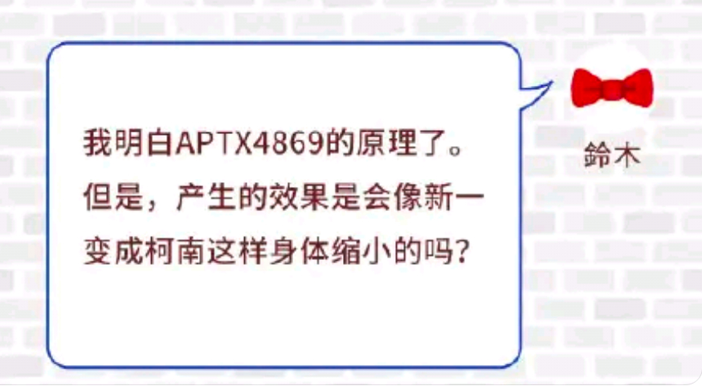
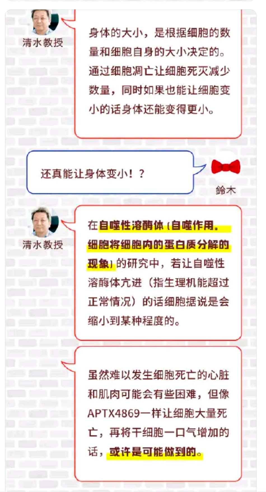
斯雾草，茅塞顿开啊新一会表小就必然，而我哀那句百年前就被牵扯进来那句话也有说法了，明天我另开有个帖讲讲
新一会表小就必然，而我哀那句百年前就被牵扯进来那句话也有说法了，明天我另开有个帖讲讲2024-06-25 06:06 | 久作天地客:我记得有说法是，“百年前就被牵扯进来”是翻译问题，另一种翻译是“牵扯进组织百年前就开始的计划”2024-08-20 20:07 | EdwardClow:正确翻译是【工藤，你已经深深介入组织半世纪就开始的计划了】
我回去重温黄昏别馆案的时候产生了一个突然的脑洞：
当年乌丸解不开黄昏别馆的秘密，最后是由柯南来解开的。众所周知黄昏别馆是乌丸家族的祖传豪宅，但作为家族长老的乌丸竟然不知道这栋祖宅的秘密，反而最终是一个“外人”柯南来破解的。
这里会不会有一个隐喻在，象征了其实乌丸莲耶不是乌丸家族的正统继承人，他是篡位上台，所以不知道黄昏别馆的秘密，而柯南是流落民间的王子，他才是正统继承人，所以祖宅的秘密对他敞开。
王子复仇记了属于是。
当年乌丸解不开黄昏别馆的秘密，最后是由柯南来解开的。众所周知黄昏别馆是乌丸家族的祖传豪宅，但作为家族长老的乌丸竟然不知道这栋祖宅的秘密，反而最终是一个“外人”柯南来破解的。
这里会不会有一个隐喻在，象征了其实乌丸莲耶不是乌丸家族的正统继承人，他是篡位上台，所以不知道黄昏别馆的秘密，而柯南是流落民间的王子，他才是正统继承人，所以祖宅的秘密对他敞开。
王子复仇记了属于是。
2024-06-24 09:15 | 双鱼逃跑的小熊:甚至基德也在2024-06-25 06:04 | 久作天地客:2024-07-30 14:07 | 螺旋线六:卧槽这个角度绝对行啊
日本动漫作品难逃【血统论】的原因：
日本天皇制是世界历史上最长的君主制度，近代明治维新后宣称“万世一系”并写入宪法，即日本从古代起没有改朝换代，始终都是皇室一系，也正是如此，日本对血统论十分地认同。这样的文化思想已经渗透到了日本作家的骨子里，他们将其代入到了文学作品中。
主角要面对的Boss竟然是自己的祖先，这并不是日本作品中的个例。对于新一来说，打败自己的祖先乌丸莲耶是他的宿命。
M6只是青山对于血统论的批判，同时这也是他无法改变的现实，日本社会的真相就是如此地无可奈何。M6灰原明明批判血统论，但她自己能做出A药是因为宫野夫妇遗传给她的高智商；柯南成为侦探是因为优作有着高超的推理能力，两位主角明明就是因为有着优秀的血统才能做出一番成就的啊！
归根结底，大家不接受名柯的【乌丸黑羽血缘论】设定，是因为两国文化的不同。
日本天皇制是世界历史上最长的君主制度，近代明治维新后宣称“万世一系”并写入宪法，即日本从古代起没有改朝换代，始终都是皇室一系，也正是如此，日本对血统论十分地认同。这样的文化思想已经渗透到了日本作家的骨子里，他们将其代入到了文学作品中。
主角要面对的Boss竟然是自己的祖先，这并不是日本作品中的个例。对于新一来说，打败自己的祖先乌丸莲耶是他的宿命。
M6只是青山对于血统论的批判，同时这也是他无法改变的现实，日本社会的真相就是如此地无可奈何。M6灰原明明批判血统论，但她自己能做出A药是因为宫野夫妇遗传给她的高智商；柯南成为侦探是因为优作有着高超的推理能力，两位主角明明就是因为有着优秀的血统才能做出一番成就的啊！
归根结底，大家不接受名柯的【乌丸黑羽血缘论】设定，是因为两国文化的不同。
红莲骷髅篇同样隐含着重要信息。
①第3楼讲的飞天密室篇，飞机图案上的月亮隐喻工藤新一。而本篇红叶乘坐的飞机图案是【鹰】，隐喻的是鹰杖老人为红叶爷爷。
②红叶提到了百人一首中的夏夜未觉曦已至，月将云借不思归。夏季的夜晚消失的很快，清晨将要到来，但是天还未亮，云缥缈伴在月旁，使月亮无心落下。
在日本，盛夏指代的是【恋爱之夏】，挂件篇正值盛夏，月亮这个意象又隐喻工藤新一，那么这句话的真正解读便是指向新一此刻的恋爱关系➡【柯南这个月亮希望常伴在志保这颗漆黑之星左右，此刻他已经不想回归到兰的身边】。
①第3楼讲的飞天密室篇，飞机图案上的月亮隐喻工藤新一。而本篇红叶乘坐的飞机图案是【鹰】，隐喻的是鹰杖老人为红叶爷爷。
②红叶提到了百人一首中的夏夜未觉曦已至，月将云借不思归。夏季的夜晚消失的很快，清晨将要到来，但是天还未亮，云缥缈伴在月旁，使月亮无心落下。
在日本，盛夏指代的是【恋爱之夏】，挂件篇正值盛夏，月亮这个意象又隐喻工藤新一，那么这句话的真正解读便是指向新一此刻的恋爱关系➡【柯南这个月亮希望常伴在志保这颗漆黑之星左右，此刻他已经不想回归到兰的身边】。
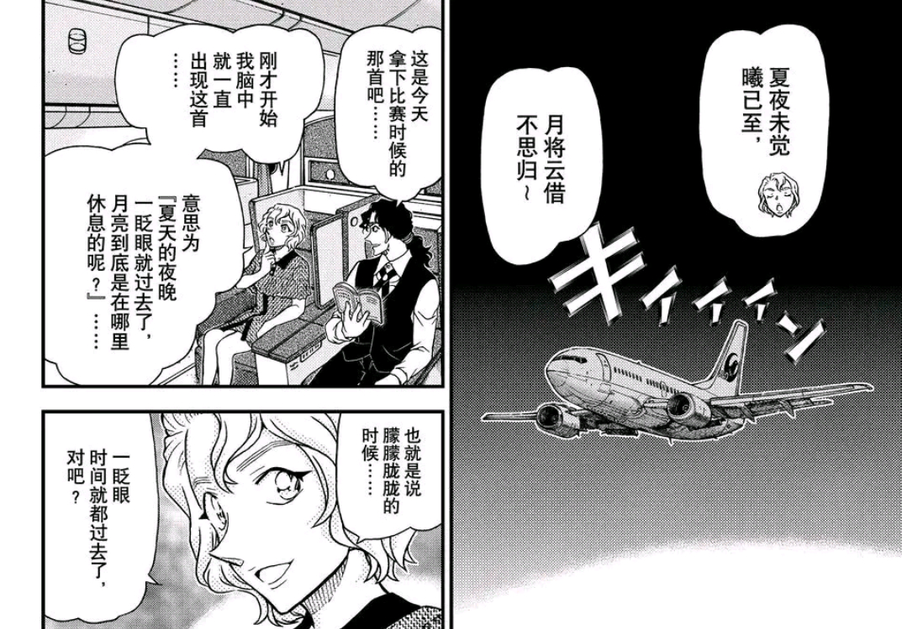
其实暗夜男爵也很有意思，绯色的搜查官原型就是秀一。优作自称暗夜男爵，有说法暗夜男爵设定来源自盗一，但暗夜男爵的行事作风却很像组织，组织病毒也是暗夜男爵。暗夜男爵上次提的多还是雪莉篇贝姐篇大概分别也是太阳星星月亮篇章左右，贝姐又和boss本人有关那。所以暗夜男爵的影射很可能是乌丸？如果是这样那或许青山让优作继续写暗夜男爵的时候就是boss篇了吧。前面也有个暗示“破解暗夜男爵的秘密”。哦对了之前新一的卡牌上还有个天狗的设定，乌丸在捉妖线对应是大天狗
还有一点就是伦敦篇有个细节“love is 0, 0 is start.”伦敦篇是致敬福尔摩斯最经典的了。看乌丸的名字中的丸好像有分析过也可以指代○，圆圈不就是0嘛。工藤新一的名字中带有1，1就是开始啊，至于love贝姐演过爱神，而贝姐恰好也说过我们既是上帝也是魔鬼嘛
还有一点就是伦敦篇有个细节“love is 0, 0 is start.”伦敦篇是致敬福尔摩斯最经典的了。看乌丸的名字中的丸好像有分析过也可以指代○，圆圈不就是0嘛。工藤新一的名字中带有1，1就是开始啊，至于love贝姐演过爱神，而贝姐恰好也说过我们既是上帝也是魔鬼嘛
15楼的吧友可以看下这个，柯哀并不是亲戚。
@其它各种
@其它各种
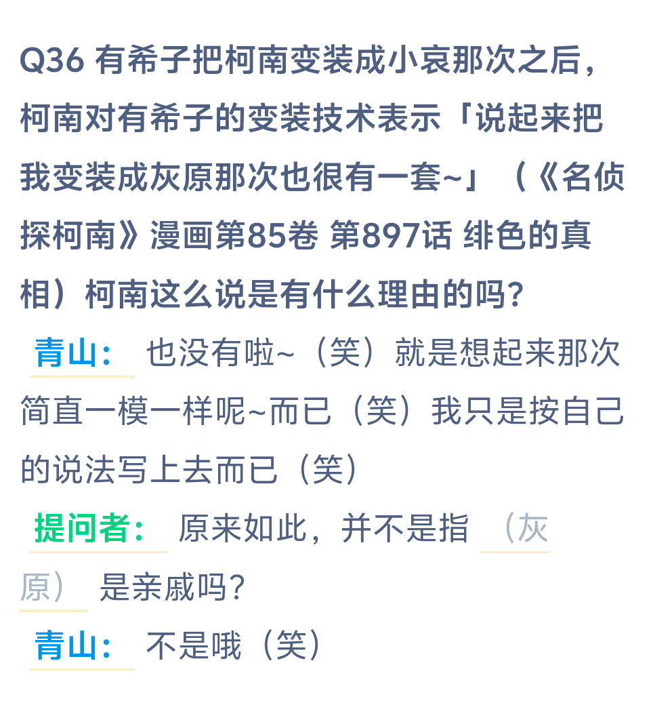
现暂时取消之前提出的灰原版本A药使特定基因者变小的猜想。
以下是最新推测：真第一集中使小白鼠变小的A药是灰原最新研制的成果，它可以使任何服用者幼儿化。琴酒给新一吃的A药正是这批最新成果，当然了，灰原和玛丽也是吃的这批A药。
以下是最新推测：真第一集中使小白鼠变小的A药是灰原最新研制的成果，它可以使任何服用者幼儿化。琴酒给新一吃的A药正是这批最新成果，当然了，灰原和玛丽也是吃的这批A药。
26卷的危命复活篇，新一扮演的黑衣骑士身上掉落的就是【乌鸦的羽毛】。
看来在黄昏别馆篇（30卷）之前，青山就已经有意将“黑羽”和“乌鸦”建立联系。
看来在黄昏别馆篇（30卷）之前，青山就已经有意将“黑羽”和“乌鸦”建立联系。
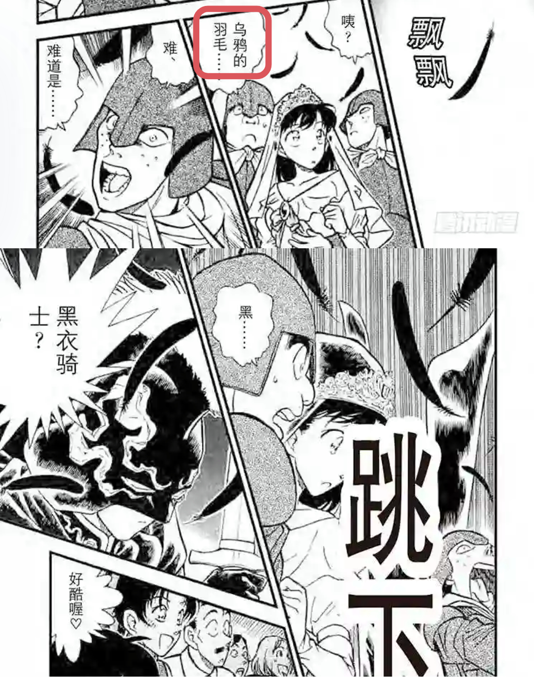
扑克牌中的大王代表太阳，小王代表月亮。
乌丸原型之一是天照（太阳神）
工藤原型之一是月读（月亮神）
飞天密室案中的最后的王牌指的会是“小王”工藤新一吗？
好玩的是，爱德华·克洛的英文姓氏为Clow，有“小丑”的意思，而在扑克牌中的“小王”是joker，也有小丑的意思。
乌丸原型之一是天照（太阳神）
工藤原型之一是月读（月亮神）
飞天密室案中的最后的王牌指的会是“小王”工藤新一吗？
好玩的是，爱德华·克洛的英文姓氏为Clow，有“小丑”的意思，而在扑克牌中的“小王”是joker，也有小丑的意思。
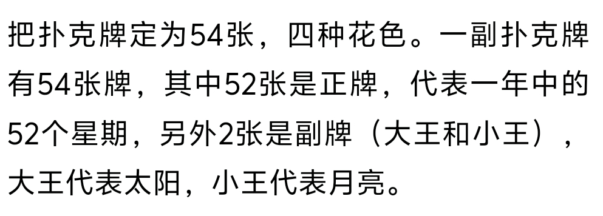
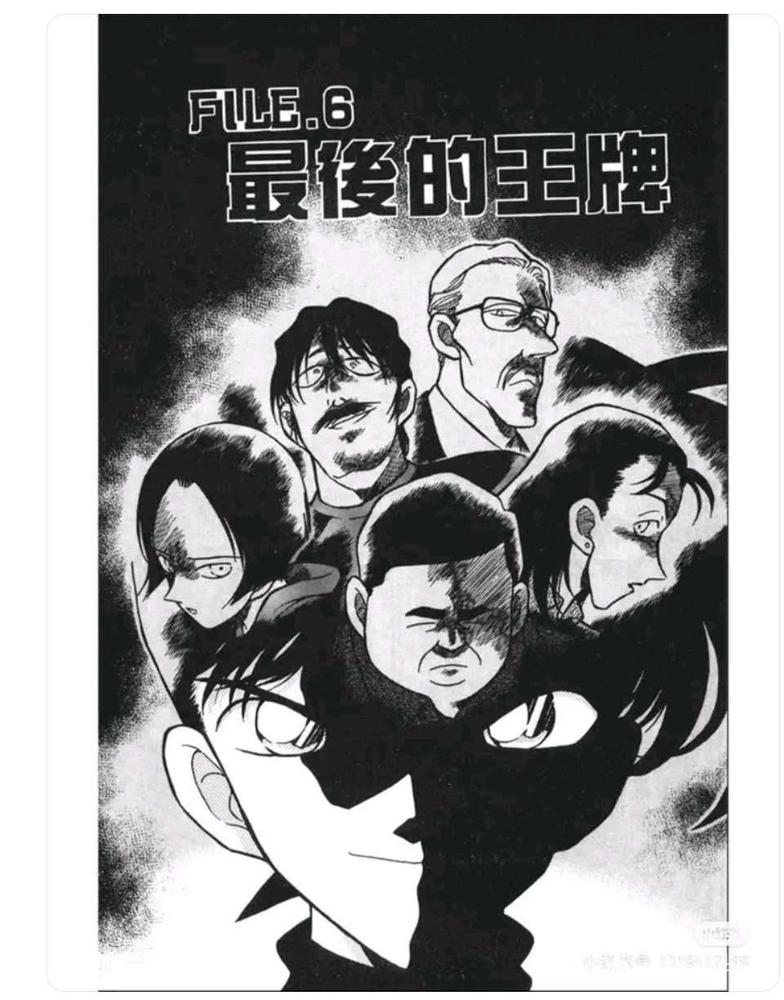
至于“王牌”指的是A还是Joker，还没有一个统一的说法。
有的人认为A表示Ace，是王牌。
有的人认为Joker的定位主要源自塔罗牌的“愚者”，含义为欢笑，以及一切未知的阶段，故在任何可能性中可以大于一切，也可以寓意为王牌。
有的人认为A表示Ace，是王牌。
有的人认为Joker的定位主要源自塔罗牌的“愚者”，含义为欢笑，以及一切未知的阶段，故在任何可能性中可以大于一切，也可以寓意为王牌。
这个帖子这么久了我才看到。
其实我在看到老贼把新一和快斗扯成亲戚后，我的第一反应就是A药只对世良家和黑羽家有用。我其实是单纯觉得a药太逆天了，尤其是作品已经扯上了日本公安 cia fbi 还有英国特工。组织一旦破灭下一个倒霉的就是哀。不可能到最后把那些特工全部写成圣母然后放过哀吧，这也太儿戏了。所以a药只对这两家有用，会让结局好处理不少。
其实我在看到老贼把新一和快斗扯成亲戚后，我的第一反应就是A药只对世良家和黑羽家有用。我其实是单纯觉得a药太逆天了，尤其是作品已经扯上了日本公安 cia fbi 还有英国特工。组织一旦破灭下一个倒霉的就是哀。不可能到最后把那些特工全部写成圣母然后放过哀吧，这也太儿戏了。所以a药只对这两家有用，会让结局好处理不少。
2024-08-20 19:19 | EdwardClow:真第一集的小白鼠吃下A药为什么会变小2024-08-20 19:31 | 请叫我吃货º:回复 EdwardClow :基因工程2024-08-20 19:33 | EdwardClow:回复 请叫我吃货º :乌丸真的会为雪莉提供自己的基因片段吗2024-08-20 19:34 | 请叫我吃货º:回复 EdwardClow :可能吧，万一组织想让A药成为定制的呢，这样更好控制那些政界的2024-08-20 22:47 | 岚丶影:回复 EdwardClow :我记得老贼是真的请教过他弟弟这方面的知识。他弟弟是医生好像。基因工程好像是70年代就开始出现的技术了。小白鼠也只有一只变小了，所以保不齐有特例合适这个药。如果没有特殊性，那么哀的解药研究应该会出现小白鼠。但是这么长时间了，漫画对于哀如何进行解药研究全是空白。

cy
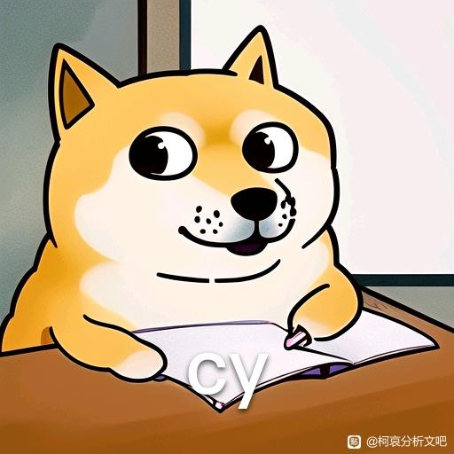
黑羽盗一也就是怪盗乌鸦，乌丸莲耶的家徽也是乌鸦
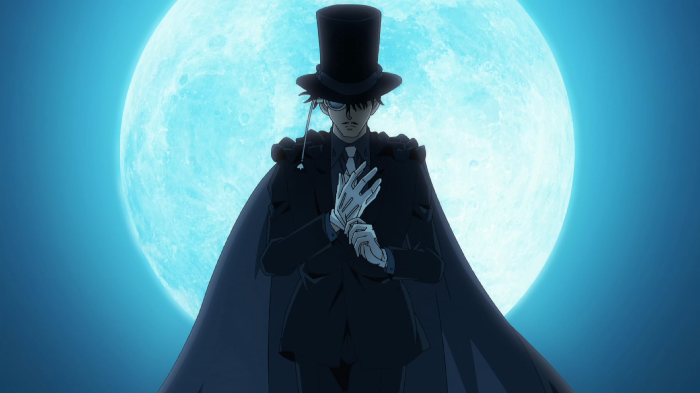
同源论有一种越分析越有理的感觉。反复出现的假面骑士致敬和隐喻（甚至若狭出现时孩子们说“假面骑士中的邪恶女超人今天要出场”，朗姆揭露时路人有“假面骑士中Boss的心腹今天要揭晓”这样的台词安排），假面系列本身就是敌我同源。还有少有的和主线黑衣组织及基德都没关系的大电影《贝克街的亡灵》中工藤优作对董事长说：“你身上流着杀人魔的血液又怎么样呢？你为什么不抵抗呢？”
boss，先祖。无一郎和黑死牟